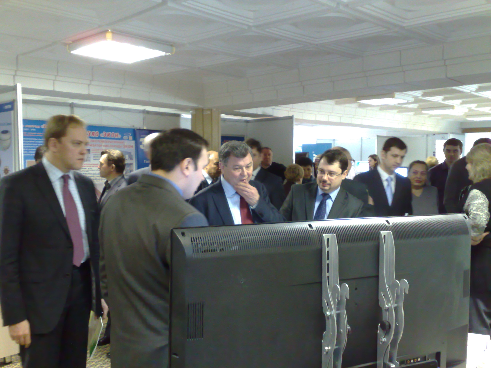
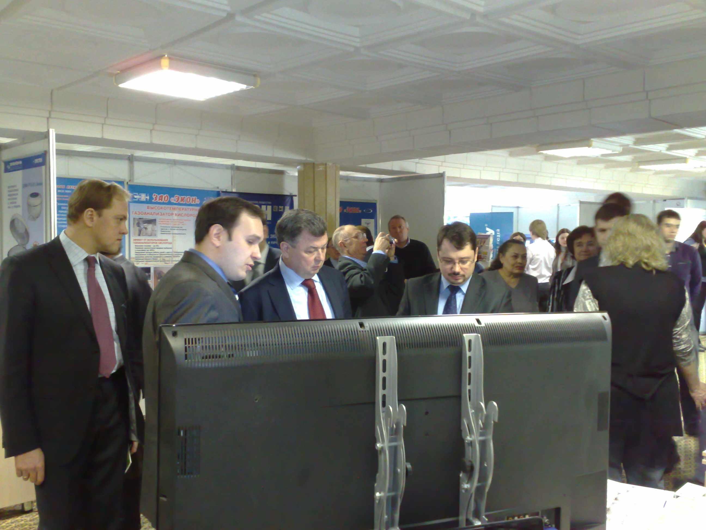

<section class="news page__global">
  <div class="news__inner">

    <h1 class="news__title page__title">Участие в коллегии регионального министерства развития информационного общества и инноваций
    </h1>
    <ul class="breadcrumb">
      <li class="breadcrumb__item">
        <a class="breadcrumb__link" href="index.html">Главная</a>
      </li>
      <li class="breadcrumb__item">
        <a class="breadcrumb__link" href="news.html">Новости</a>
      </li>
      <li class="breadcrumb__item">
        Участие в коллегии регионального министерства развития информационного общества и инноваций
      </li>
    </ul>

    <div class="wrapper">


      <div class="news__block">
        <p class="page__text"><b>28 февраля 2011 года</b></p>
        <p class="page__text">
          ООО НПП "ПОЛЕТ" участвовало в расширенной коллегии регионального министерства развития информационного общества и инноваций, где представило губернатору Калужской области Анатолию Артамонову и его заместителю Максиму Шерейкину спектр выпускаемой предприятием продукции.
        </p>
        <div class="image__gallery">
          <div class="image__gallery-item">
            
          </div>
          <div class="image__gallery-item">
            
          </div>
        </div>
      </div>

      <div class="news__link-item">
        <a class="page__link news__link" href="news.html">Вернуться к ленте новостей</a>
      </div>
    </div>

  </div>
</section>